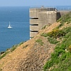
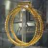
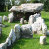

|  |  |
 |  |  |
| l'histouaithe | history |
| l'pâssé | past |
| un mûsée | museum |
| l'archéologie | archaeology |
| un siècl'ye | century |
| un millénaithe | millennium |
| l'âge dé gliaiche | ice age |
| l'âge dé pièrre | stone age |
| l'âge dé bronze | bronze age |
| l'âge dé fé | iron age |
| l'Mouoyen Âge | Middle Ages |
| la R'naîssance | Renaissance |
| la Révolution Îndustrielle | Industrial Revolution |
| la Preunmié Dgèrre Mondiale | First World War |
| la Deuxième Dgèrre Mondiale | Second World War |
| l'Otchupâtion | the Occupation |
| la Fraide Dgèrre | Cold War |
| la Batâle dé Jèrri | Battle of Jersey |
| la R'formâtion | Reformation |
| la Dgèrre Civile | Civil War |
| la Contchête | the Conquest |
| la Batâle dé Hastings | Battle of Hastings |
| les Crouaîsades | the Crusades |
| les fouithies | digs |
| un historien | historian |
| un dolmen | dolmen |
| eune pouquelaye | dolmen |
| un châté | castle |
| la préhistouaithe | prehistory |
| préhistorique | prehistoric |
| historique | historic |
| l'héthitage | heritage |
| les r'liques | relics |
| les ruinnes | ruins |
| eune fossile | fossil |
| eune chronique | chronicle |
| ancien | ancient |
| l'ancienneté | ancient times |
| dans les touos vièrs temps | long ago |
| du temps d'Âdam | since time immemorial |
| du temps du rouai Jean | since time immemorial |
| un monûment | monument |
| eune longue pièrre | standing stone |
| l'histouaithe dé fanmil'ye | family history |
| la généalogie | genealogy |
| généalogique | genealogical |
| un anchêtre | ancestor |
| les r'chèrches | research |
| la bibliothèque | library |
Viyiz étout: